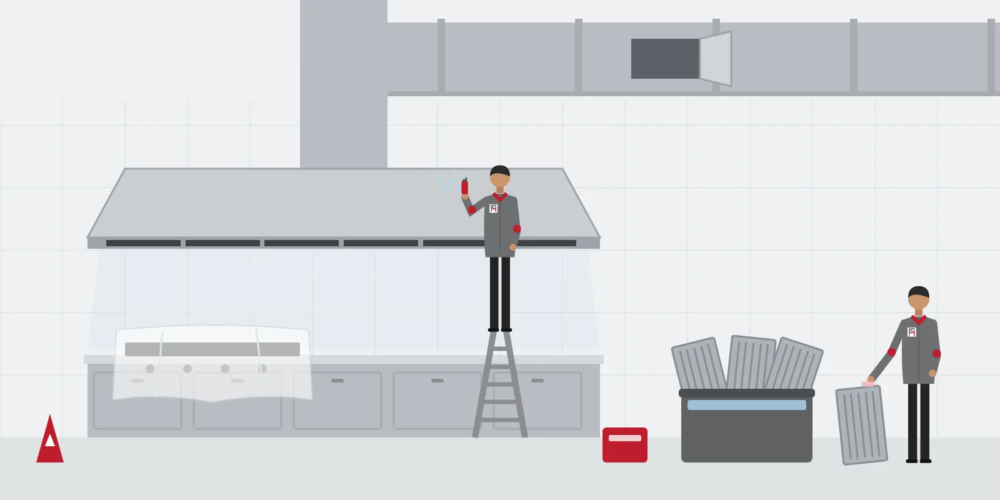

دليل · تنظيف شفاطات المطابخ
تنظيف شفاطات المطابخ للمطاعم في قطر: كم مرة، ولماذا يهم ذلك للسلامة من الحريق

ينبغي لمعظم مطابخ المطاعم في قطر فحص نظام الشفط بالكامل وتنظيفه (الشفاط والفلاتر ومجاري الهواء والمروحة) كل ستة أشهر. أما المطابخ المزدحمة ذات حجم الطهي الكبير فتحتاج إلى ذلك كل ثلاثة أشهر، والمطابخ التي تطهو على الفحم أو الحطب كل شهر. ويمكن أن تمتد الفترة إلى سنة في المطابخ الصغيرة ذات الطهي الخفيف. وتستند هذه الفترات إلى معيار NFPA 96، وهو المعيار الدولي الواسع الاستخدام لتهوية المطابخ التجارية والحماية من الحريق. أما فلاتر الشفاط فتحتاج إلى تنظيف أكثر تكرارًا بكثير، ويتولاه عادةً فريق مطبخك.
لماذا يهم ذلك أكثر في قطر
يُطلق الطهي أبخرة محمّلة بالدهون تتجه إلى الشفاط. تلتقط الفلاتر جزءًا منها، ويلتصق الباقي داخل الشفاط ومجاري الهواء والمروحة. والدهون سريعة الاشتعال، فقد يصل لهب مفاجئ من الشواية إلى مجرى هواء مليء بالدهون، وحريق مجرى الهواء ينتشر بسرعة ويصعب الوصول إليه.
وتواجه المطابخ في قطر ضغطًا إضافيًا:
- ساعات عمل طويلة. تفتح مطاعم كثيرة من وقت الإفطار حتى وقت متأخر، وبعضها لا يغلق أبدًا.
- شوي وقلي بكميات كبيرة. المشاوي المشكّلة والشاورما والمقبلات المقلية وأطباق الووك كلها تطلق كمية كبيرة من الدهون في الهواء.
- الحرارة. المطابخ حارة أصلًا، ودرجات حرارة الصيف تزيد العبء على نظام التهوية. والنظام المليء بالدهون يسحب هواءً أقل، فيصبح المطبخ أكثر حرارة ودخانًا.
والسلامة من الحريق جزء من الترخيص أيضًا. فعلى سبيل المثال، يذكر دليل وزارة التجارة والصناعة للمطابخ السحابية موافقة إدارة الدفاع المدني في وزارة الداخلية، وموافقة وزارة البلدية، والالتزام باشتراطات الدفاع المدني والوقاية من الحريق والتهوية الصناعية.
كم مرة، حسب نوع المطبخ
| نوع المطبخ | أمثلة | فحص النظام بالكامل وتنظيفه |
|---|---|---|
| الوقود الصلب | شوايات الفحم، وتنانير الفحم، وأفران الحطب | كل شهر |
| حجم طهي مرتفع | المطابخ التي تعمل 24 ساعة، والشوي على اللهب المباشر، وطهي الووك، ومطاعم المشاوي والمقليات المزدحمة جدًا | كل 3 أشهر |
| حجم طهي متوسط | معظم المطاعم، ومطابخ الفنادق والولائم، ومقاصف الموظفين | كل 6 أشهر |
| حجم طهي منخفض | المقاهي الصغيرة، والمطابخ الصغيرة قليلة الاستخدام، والمطابخ الموسمية | كل 12 شهرًا |
يحدد معيار NFPA 96 هذه الفترات لفحص تراكم الدهون، ويجب بعد ذلك تنظيف أي جزء يوجد فيه تراكم. وفي مطابخ قطر المزدحمة يكون هناك تراكم في الغالب بحلول ذلك الوقت، لذا خطّط للتنظيف بالفترة نفسها. وإذا لم تكن متأكدًا من الصف المناسب لمطبخك، فاختر الأكثر تكرارًا.
ما يجب أن يشمله التنظيف الصحيح
مسح الشفاط وحده لا يكفي، فالدهون المخفية في مجاري الهواء هي الأهم. ويجب أن يشمل التنظيف الصحيح:
- تغطية معدات الطهي والأسطح المجاورة قبل بدء العمل
- فك الفلاتر وإزالة الدهون عنها بالكامل
- مظلة الشفاط من الداخل والخارج
- تنظيف مجاري الهواء عبر فتحات الصيانة على امتداد المسار حتى المروحة
- غلاف مروحة الشفط وشفراتها
- فحص فتحات الصيانة وإعادة تركيبها بشكل صحيح
- تنظيف منطقة العمل بعد الانتهاء
- تقرير يتضمن صورًا قبل التنظيف وبعده، والتاريخ، وأي مناطق تعذّر الوصول إليها
وبموجب معيار NFPA 96، يجب أن تترك شركة التنظيف شهادة مؤرخة، وأن تبلّغ عن أي مناطق لم تتمكن من الوصول إليها أو تنظيفها.
علامات تدل على تأخر تنظيف الشفاط
- تقطّر الدهون من حواف الشفاط أو من الفلاتر
- فلاتر تبقى لزجة بعد غسلها
- دخان أو روائح طهي تبقى في المكان
- المطبخ أكثر حرارة والشفط أضعف
- المروحة أعلى صوتًا من المعتاد أو تهتز
- لا أحد يتذكر موعد آخر تنظيف كامل
الأسئلة الشائعة
هل تنظيف شفاطات المطابخ إلزامي في قطر؟
موافقة الدفاع المدني جزء من ترخيص منشآت الأغذية مثل المطابخ السحابية. أما جدول التنظيف نفسه، فالمرجع الواسع الاستخدام هو معيار NFPA 96. ويمكن لمستشار السلامة من الحريق لديك تأكيد ما ينطبق على موقعك.
هل يمكن لموظفي مطبخنا تنظيف الشفاط بأنفسهم؟
يجب أن ينظّف فريقك الفلاتر والسطح الخارجي للشفاط بانتظام. أما مجاري الهواء والمراوح فأمرها مختلف: إذ ينص معيار NFPA 96 على أن يتولى تنظيف النظام أشخاص مدرَّبون ومؤهَّلون تأهيلًا مناسبًا.
هل نحتاج إلى إغلاق المطبخ أثناء التنظيف؟
يجب إيقاف الطهي أثناء تنظيف النظام. وتحجز معظم المطابخ موعد العمل ليلًا أو في الصباح الباكر أو في يوم إغلاق.
حافظ على سلامة مطبخك
توفر JAFM قطر خدمة تنظيف شفاطات المطابخ ومجاري الهواء للمطاعم والفنادق والمقاهي والمقاصف في جميع أنحاء قطر. نفحص النظام، ونقترح جدولًا يناسب طريقة الطهي في مطبخك، ونخطط للعمل بما يتناسب مع أوقات الخدمة لديك. تعرّف على خدمة تنظيف شفاطات المطابخ أو اطلب زيارة موقع مجانية.